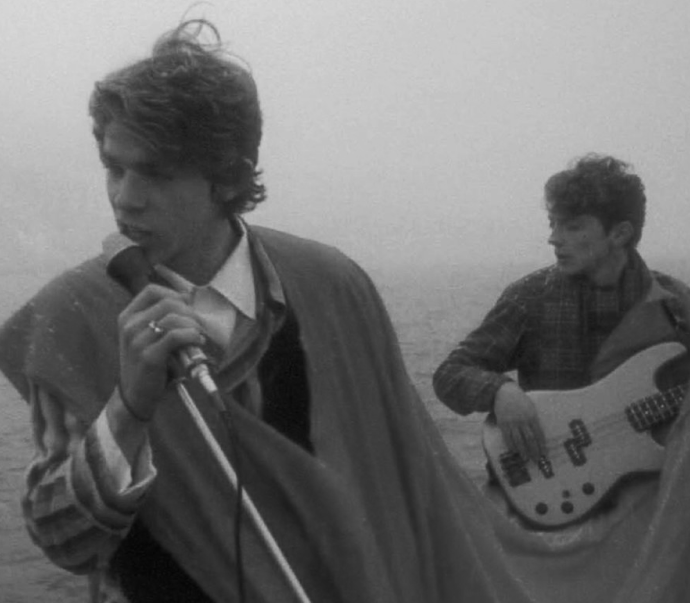
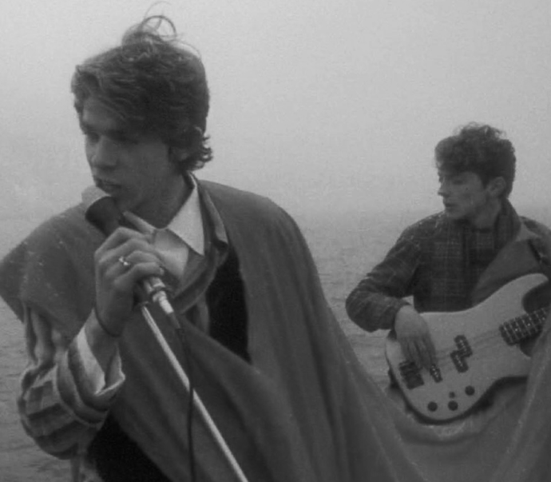

«Асса» — легендарный советский
фильм, прославившийся
захватывающим сюжетом и музыкой.
 


«Асса» — легендарный советский фильм, прославившийся не только захватывающим сюжетом, но и прекрасно подобранной музыкой. В далеком теперь 1987 году молодые люди по несколько раз подряд ходили в кино на этот фильм.
На этот фильм водили девушек на свидания, собирались компаниями, и теперь он по праву считается символом молодежи конца 80-х и начала 90-х. Если спросить сегодняшнюю молодежь или же взрослых уже людей о чем фильм «Асса», то ответ будет таким же как и 30 лет назад — о любви и о том, что юность все прощает и оправдывает... Этот фильм должен был по свежей памяти запечатлеть «поколение дворников и сторожей», нищих романтиков и безвестных артистов и со своей задачей он справился.

Отношения

Творчество

Музыка

Искусство
«Асса» — советская драма 1987 года режиссёра Сергея Соловьёва по сценарию Сергея Ливнева
Отношения
Творчество
Музыка
Искусство
«Асса» — легендарный советский фильм, прославившийся не только захватывающим сюжетом, но и прекрасно подобранной музыкой. В далеком теперь 1987 году молодые люди по несколько раз подряд ходили в кино на этот фильм. На этот фильм водили девушек на свидания, собирались компаниями, и теперь он по праву считается символом молодежи конца 80-х и начала 90-х.
Если спросить сегодняшнюю молодежь или же взрослых уже людей о чем фильм «Асса», то ответ будет таким же как и 30 лет назад — о любви и о том, что юность все прощает и оправдывает... Этот фильм должен был по свежей памяти запечатлеть «поколение дворников и сторожей», нищих романтиков и безвестных артистов и со своей задачей он справился.
Любовный треугольник: вор в законе Крымов, его молодая любовница Алика и ялтинский разгильдяй Бананан. Крымов читает исторический роман Эйдельмана и собирается при помощи лилипутов похитить скрипку Гварнери, Бананан поет песни Гребенщикова в местном ресторане, а Алика постепенно влюбляется в Бананана.
Надеясь на яркую и безбедную жизнь, девушка связывает свою судьбу с криминальным авторитетом. Но есть и другая жизнь — свободная и с музыкой. Две эти жизни трагически сталкиваются. История глупой гибели юного неформала, вздумавшего влюбиться в девушку крупного мафиози.

Положения

Рок-группа

Самовыражение

Любовь (?)
Положения
Рок-группа
Самовыражение
Любовь (?)
Любовный треугольник: вор в законе Крымов, его молодая любовница Алика и ялтинский разгильдяй Бананан. Крымов читает исторический роман Эйдельмана и собирается при помощи лилипутов похитить скрипку Гварнери, Бананан поет песни Гребенщикова в местном ресторане, а Алика постепенно влюбляется в Бананана.
Надеясь на яркую и безбедную жизнь, девушка связывает свою судьбу с криминальным авторитетом. Но есть и другая жизнь — свободная и с музыкой. Две эти жизни трагически сталкиваются. История глупой гибели юного неформала, вздумавшего влюбиться в девушку крупного мафиози.


В́иктор Цой — советский рок-музыкант
Смысл фильма довольно прозрачен. Сценаристы поставили перед собой цель отразить эпоху, творчески запечатлеть поколение тогда еще новых, совершенно необычных для СССР людей — ярких, творческих, не желающих жить в рамках условностей. Но помимо того, что фильм повествует о поколении бунтарей, ожидающих скорых перемен, это еще и совершенно не европейское поколение.
Именно молодые люди 80-х были этим уникальным симбиозом бунта, но и того характера, что мог развиться только в советских условиях (отсутствие заоблачных амбиций, желания обязательно разбогатеть и прославиться — творчество было ради творчества).
Этот фильм должен был по свежей памяти запечатлеть «поколение дворников и сторожей», нищих романтиков и безвестных артистов и со своей задачей он справился.
01

Главные герои
02
Остановка полицейским
03
Запись песни
04

Финальная сцена
05

Завтрак в кафе
06

Песня про бананана
История любви заканчивается тем, что Бананан погибает, а Алика убивает бывшего возлюбленного из мести. А сам фильм только тем, что Бананану находят замену, а группа после этого становится известной. Несмотря на то, что может показаться, что таким образом хотели показать приход более талантливого артиста, посыл не в этом.
Бананан может быть не менее талантлив, чем Цой, но известность — это только воля случая. Сколько таких талантливых ребят тогда пело в ресторанах по всему Советскому Союзу не известно, но всех их олицетворяет Бананан из Ялты.
Легендарная песня группы Кино «Перемен»